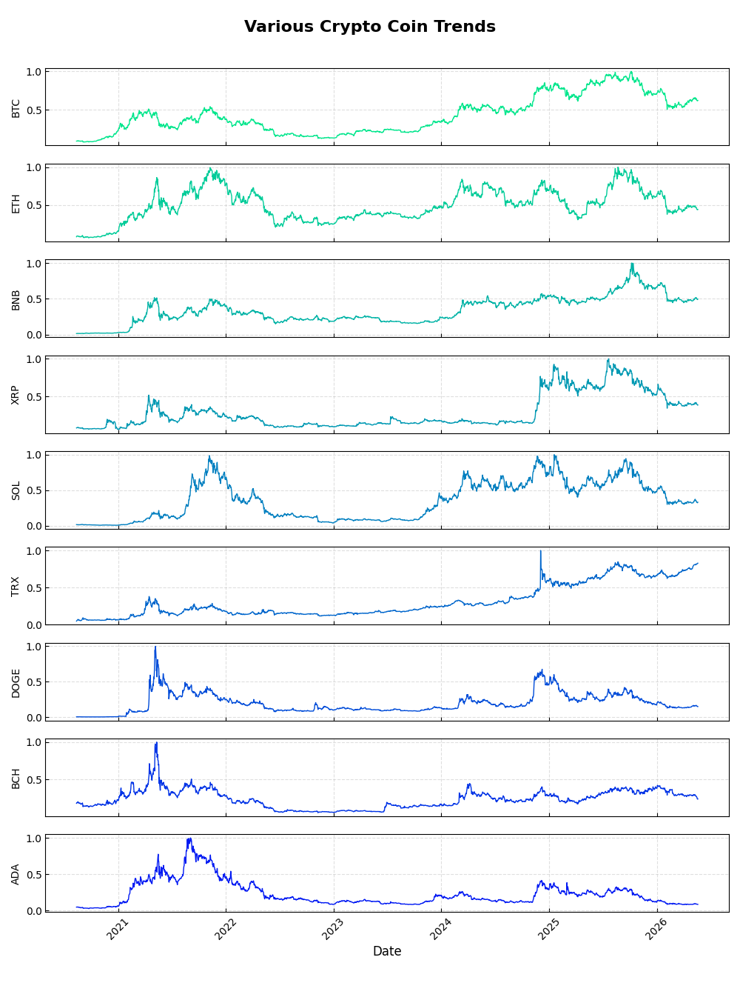
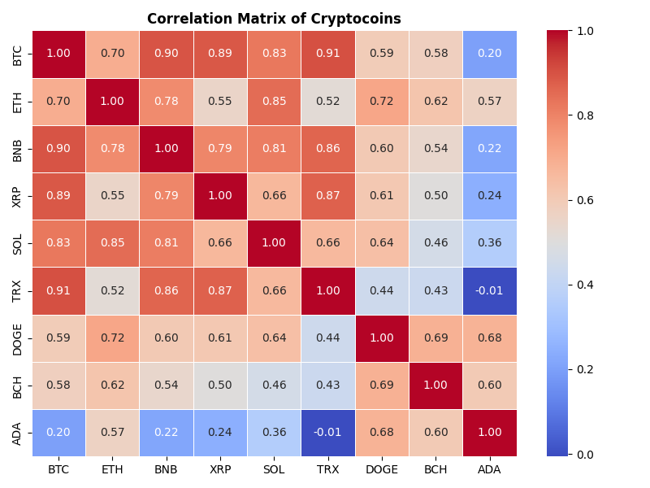
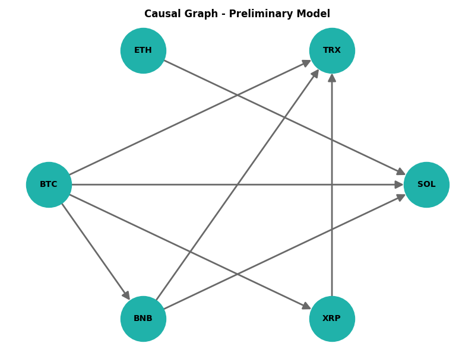
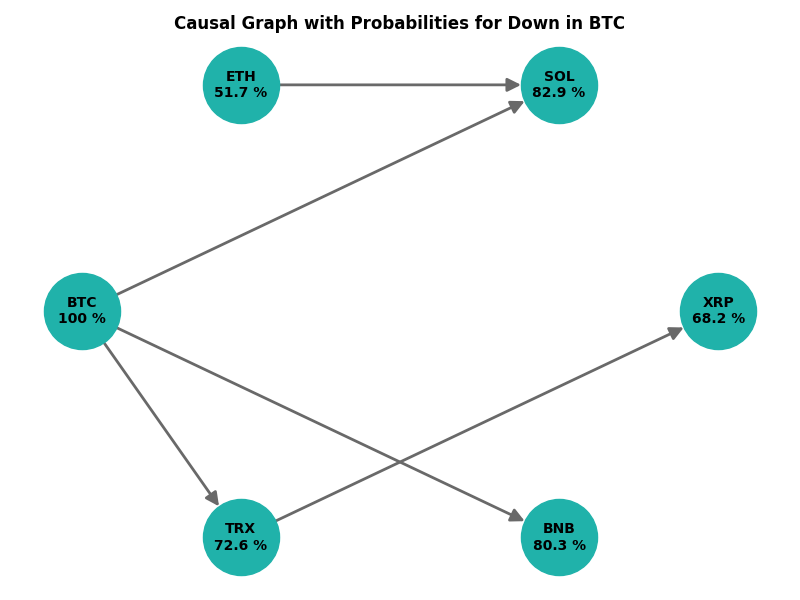
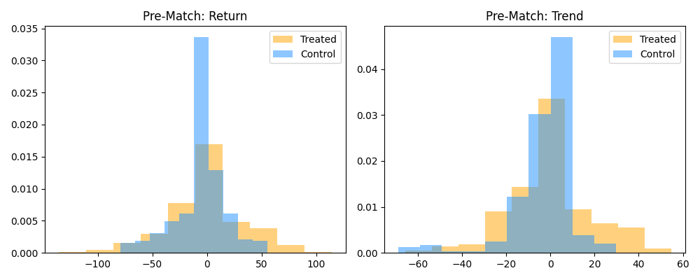

CausCrypto | Causal Inference in Cryptocurrency Market: BTC vs. Altcoins
This project explores the causal relationships between Bitcoin (BTC) and the broader altcoin ecosystem. Rather than relying on simple correlations, the framework employs advanced causal inference techniques to determine if Bitcoin’s price movements actively drive the dynamics of other assets.
Key Technical Implementations:
Data Pipeline & Stationarity Anaylsis: Processing of OHLCV datasets cryptodatadownload with min-max normalization for cross-asset comparison. Stationarity testing using the Augmented Dickey-Fuller (ADF) test to identify price drifts and stationary series (e.g., DOGE).

Dependency Mapping:
Construction of a correlation matrix using Pearson coefficients to identify strongly coupled assets. Filtering via a correlation threshold (> 0.8) to derive a Directed Acyclic Graph (DAG) of market influence.

Probabilistic Causal Modeling:

Implementation of a Bayesian Network (BN) using the `pomegranate` library to model the probability of asset price movements. Use of manually specified Conditional Probability Tables (CPTs) to ensure deterministic results and reproducibility. Inference of posterior probabilities to quantify the likelihood of altcoin declines given BTC's movement.

Causal Effect Estimation (Counterfactuals):
Addressing confounding variables through Propensity Score Matching (PSM). Logistic Regression used to estimate propensity scores, followed by Nearest Neighbor matching to create balanced treated and control groups. Non-parametric Bootstrapping (10,000 iterations) to calculate the Average Treatment Effect (ATE) and confidence intervals for returns and trends.

Summary:
By combining Bayesian Networks with Propensity Score Matching, this project moves beyond correlation to provide a probabilistic and causal understanding of how market leaders influence speculative assets.
GitHub: github.com/markus-schindler/CausCrypto